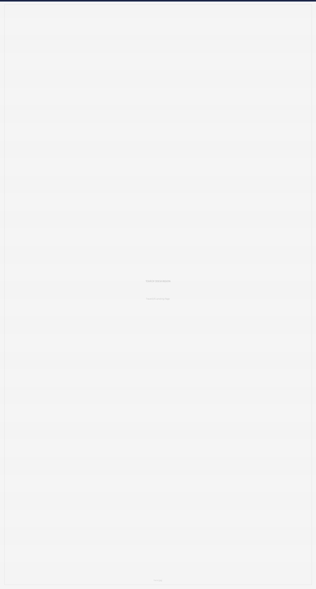
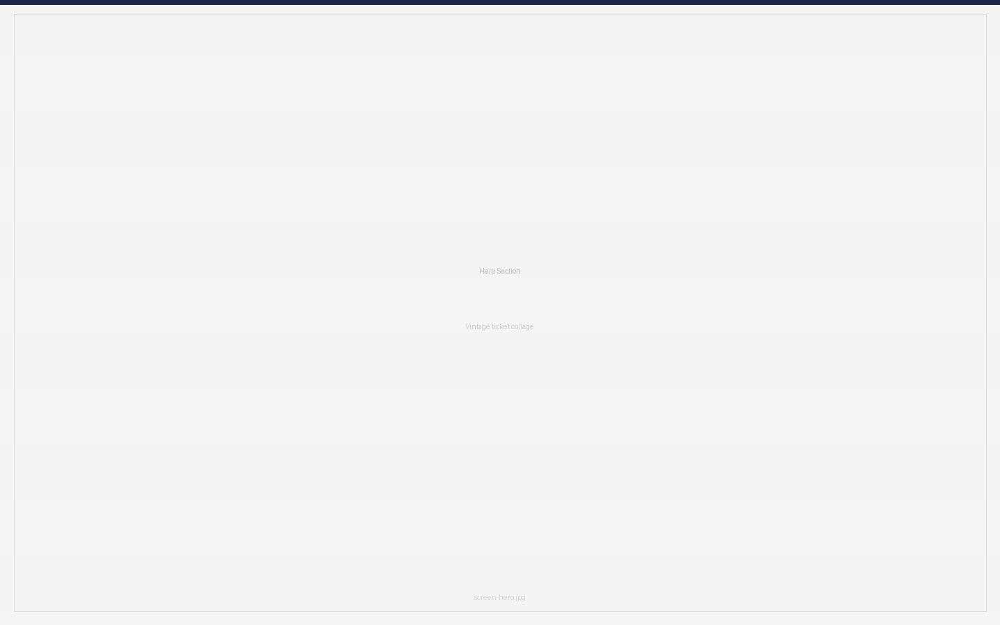
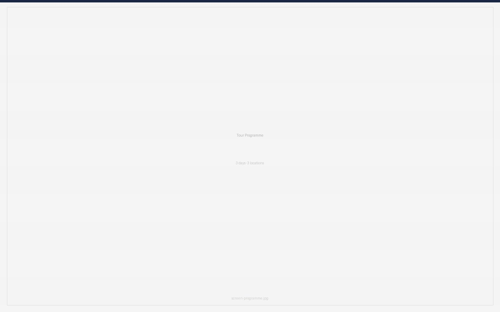
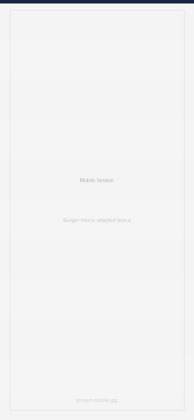

TOUR OF ODESA REGION
A landing page for TravelUA — a fictional tourist company that wanted to attract new clients online. The goal: create a page that tells the story of the tour, builds emotional connection, and motivates visitors to book.

CHALLENGE
Most travel landing pages look the same — stock photos of beaches, generic layouts. The task was to make something that felt like Odesa itself: atmospheric, authentic, a little vintage.
AUDIENCE
Ukrainians aged 25–45 who value culture, nature and domestic travel. Couples and friends looking for an active weekend getaway.
APPROACH
I started with a moodboard but couldn't find hero images that felt fresh. That constraint pushed me toward an unexpected solution — a collage of real Odesa artefacts: theatre tickets, tram passes, opera stubs. Things that are authentically tied to the city's culture and character.
The vintage aesthetic wasn't accidental. Odesa is a city of flea markets, old courtyards and layers of history. The warm palette and collage style reflect that identity.



WHAT I BUILT?
- Hero with vintage ticket collage
- Tour programme — 3 days, 3 locations
- Booking details styled as a physical ticket
- Booking form + Guest reviews
- Full mobile version with burger menu and adapted layout
WHAT I LEARNED?
Looking back, I'd start with user personas and map their needs before touching Figma. Then build a site map, user flow and user journey — and only then move to moodboard and prototyping. This project taught me that feeling your way through design works for atmosphere, but structure makes it work for users.